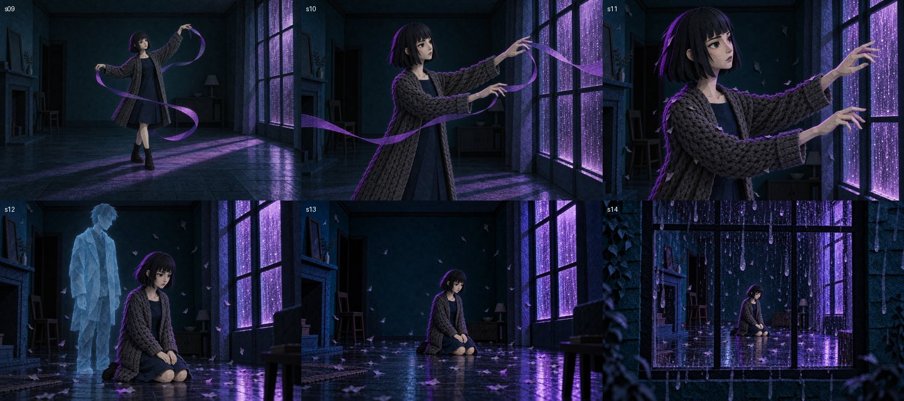
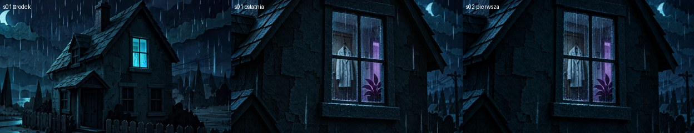
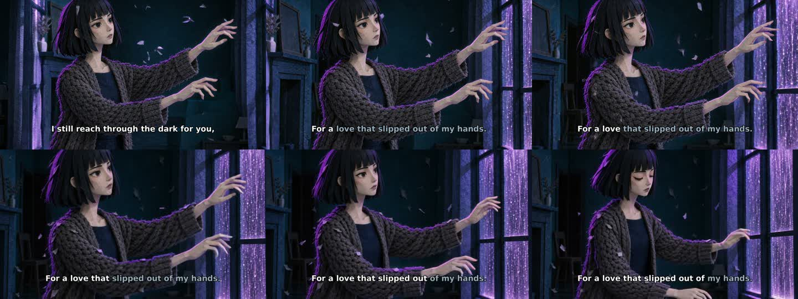
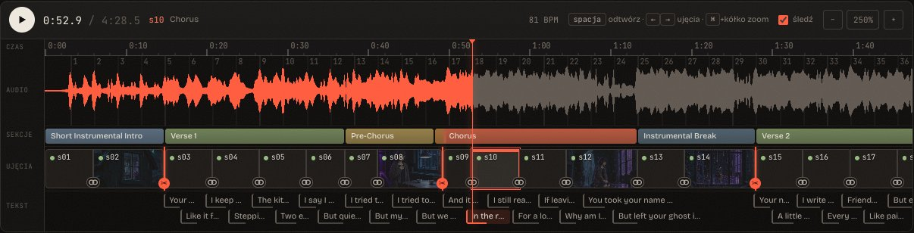
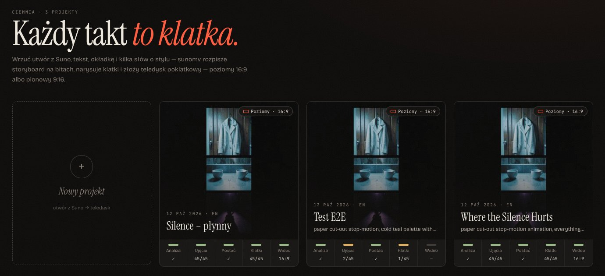
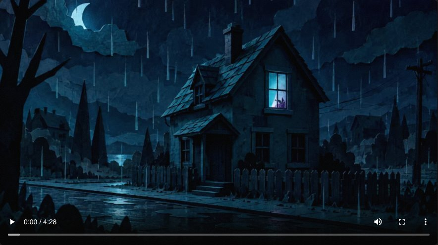

Bring a song made with Suno, its lyrics, its cover and a few words about the look you want. sunomv turns it into a hand-made-looking, frame-by-frame music video that moves with the music, in 16:9 or 9:16.
You bring the music and the mood. sunomv takes care of the timing, the story, the pictures and the edit, and keeps every step open for you to adjust.
Finds the tempo, the bars, the verses and choruses, and the moment every word is sung.
Writes a shot list that tells the story of the lyrics, in the style you asked for.
Paints every scene as one complete picture, with the same main character from start to end.
Brings each scene to life, with motion that suits the section of the song.
Stop-motion timing locked to the beat, karaoke captions, and a ready-to-post video in 16:9 or 9:16.
The video cuts only where the song changes, for example into a chorus or a bridge. In between, one shot flows into the next: the same place, the same light, the same character, with the camera and the story moving on.

A wide shot of the room, closer and closer on the woman at the window, then the camera pulls back out into the rain, all in one continuous take.


Every project lives in one place: the song on a timeline, the shots, the pictures and the finished video. Change any shot, keep the rest. (The interface is in Polish for now.)


